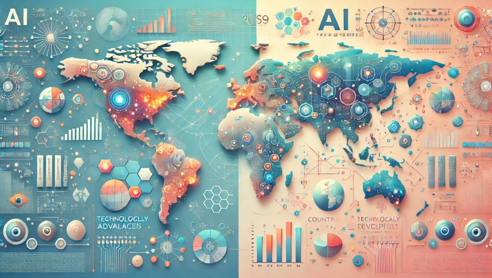

La inteligencia artificial ha experimentado avances significativos en los últimos años, con aplicaciones en diversos campos como la medicina, la educación y la industria.
Estos avances están transformando la forma en que interactuamos con la tecnología y abriendo nuevas posibilidades para el futuro. Por ejemplo, en el campo de la medicina, la IA está ayudando a los profesionales a diagnosticar enfermedades con mayor precisión y a desarrollar tratamientos personalizados.

En la educación, la IA está siendo utilizada para crear sistemas de aprendizaje adaptativo que se ajustan a las necesidades individuales de los estudiantes, mejorando así su experiencia educativa. Además, en la industria, la IA está optimizando procesos de producción y logística, aumentando la eficiencia y reduciendo costos.
En resumen, los avances de la inteligencia artificial están teniendo un impacto profundo en nuestra sociedad, y es importante seguir investigando y desarrollando esta tecnología de manera ética y responsable para maximizar sus beneficios y minimizar sus riesgos.
